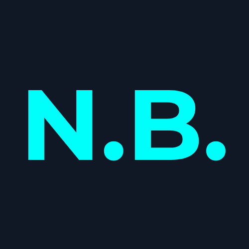

Merhaba, ben Nisanur. Bilgisayar Programcılığı öğrencisi, "Local-First" (önce yerel) yazılım mimarisi savunucusu ve dijital dünyanın sınırlarını zorlayan bir geliştiriciyim. Yerel ve bağımsız bir teknoloji dünyasının mümkün olduğunu projelerimle kanıtlıyorum.
Bilgisayar Programcılığı (Ön Lisans)
Ağ İşletmenliği ve Siber Güvenlik (Bölüm Birinciliği)
Girişimcilik odaklı yazılım çalışmaları yürüttüm.
Yazılım Geliştirme, kurumsal web tasarım süreçlerine destek veriyorum.
Kurumsal IT altyapısı kapsamında donanım, yazılım ve ağ destek süreçlerinde görev aldım. Kullanıcı bilgisayarlarının kurulumu, yapılandırılması ve sorun giderme işlemlerini gerçekleştirdim. Ağ cihazlarının bakım ve yönetimine destek verdim; teknik destek taleplerini kurumsal süreçlere uygun şekilde çözüme kavuşturdum.
Kurumsal web sitesinin tasarım ve geliştirme süreçlerini gerçekleştirdim. unitolye.org
Microsoft Recall gibi devasa sistemlerin yarattığı güvenlik açıklarına ve donanım dayatmalarına yerli bir mühendislik yanıtıdır. Tamamen Win32 API ve .NET mimarisiyle çalışan bu proje; düşük sistem kaynağı tüketimi ve %100 yerel veri depolama (SQLite) özelliğiyle dijital hafıza yönetiminde yeni bir standart belirlemektedir.
ASP.NET Web API merkezli, PHP ve C# WinForms ayakları olan hibrit bir sistemdir. AI desteği ile teknik destek taleplerini önceliklendirir ve otomatik çözüm önerileri sunarak kurumsal verimliliği optimize eder. Role-Based Access Control (RBAC) ve siber güvenlik standartlarında loglama altyapısına sahiptir.